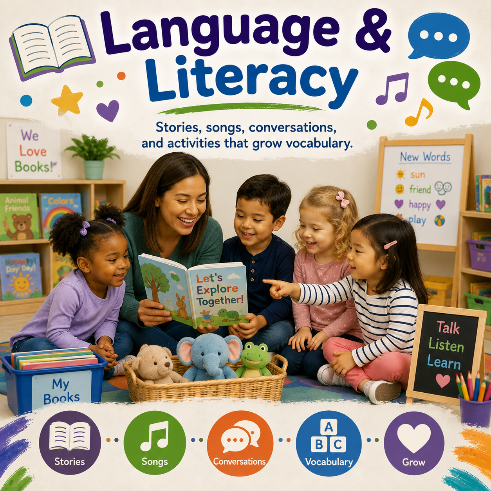

Routine
Morning Meeting
Children greet each other, review classroom routines, and prepare for the day.
Circle time creates opportunities for children to build relationships, share ideas, practice communication, develop routines, and participate in meaningful group experiences.

Circle time helps children feel connected, learn classroom routines, practice communication, and participate in shared learning experiences. Through stories, songs, discussions, and hands-on activities, children develop social, language, and cognitive skills.
Engaging group experiences that build relationships, communication, routines, and early learning skills.
Children greet each other, review classroom routines, and prepare for the day.

Children develop listening skills, vocabulary, imagination, and comprehension through shared reading.

Children build memory, language, rhythm, and coordination through music experiences.

Children explore days, dates, seasons, weather, and classroom routines.
Create meaningful group experiences throughout the day.
Greetings, routines, and classroom connections.
Books, questions, and conversations.
Music, movement, and language development.
Numbers, patterns, weather, and routines.
Emotional awareness and classroom belonging.
Sharing ideas, questions, and experiences.
Simple group experiences that encourage participation and learning.
Children greet classmates, share feelings, and practice classroom communication.
Children answer questions, make predictions, and discuss characters.
Children sing, dance, and follow movement directions.
Children observe weather, record changes, and discuss seasons.
Group experiences help children build communication, confidence, relationships, and early learning skills.
Children practice listening, speaking, sharing ideas, and participating in conversations.
Children learn cooperation, turn taking, respect, and classroom community.
Stories, songs, and discussions support vocabulary and comprehension.
Children make predictions, answer questions, and solve problems.
Create a welcoming group experience where every child feels included.
Consistent routines help children feel secure and ready to participate.
Give every child opportunities to share ideas and respond.
Songs and movement help children stay engaged and active.
Connect discussions to children's questions, experiences, and ideas.
Choose group experiences that match children's attention, development, and interests.
Songs, simple routines, sensory experiences, and responsive interactions.
Explore →Short stories, movement songs, and simple discussions.
Explore →Longer discussions, questions, songs, and group activities.
Explore →Leadership roles, complex conversations, and kindergarten readiness.
Explore →Circle time activities support language development, social emotional growth, approaches to learning, cognitive development, and classroom relationships.